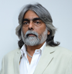
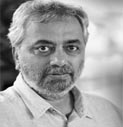
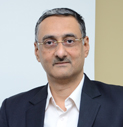
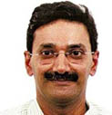
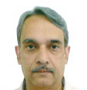
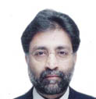
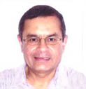
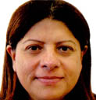
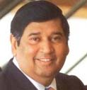
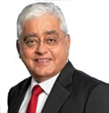

-

Mr. Bharat V. Daftary
Mr. Bharat V. Daftary, Chairman and Managing Director of the Company, has been involved with the business affairs of the Company since over three decades. He plays an important role in the marketing function and in development of global relationships. He spearheads the strategic planning of the Company. He is related to Dr. Gautam Daftary, Vice Chairman and Managing Director of the Company and Mr. Siddharth B. Daftary, Whole-time Director of the Company
-

Dr.Gautam Daftary
Dr. Gautam Daftary, a medical Doctor, is the Vice Chairman and Managing Director of the Company and is primarily responsible for R&D activities and technical matters. His knowledge and expertise in the fields of microbiology, oncology, allergies and psychiatrics has led him to being instrumental in providing the necessary thrust in the R&D activities of the Company. He is related to Mr. Bharat Daftary, Chairman and Managing Director of the Company and Mr. Siddharth B. Daftary, Whole-time Director of the Company.
-
Mr.Siddharth B. Daftary
Mr. Siddharth B. Daftary has graduated with a Bachelor of Science degree in Life Sciences from the University of Mumbai and holds Master of Science degree in Molecular & Genetic Medicine from the University of Sheffield, England. Mr. Siddharth Daftary is Whole-time Director in a Company and is presently looking after the business development activities in Bharat Serums & Vaccines Ltd. He also actively involved in the business development, sales and operational activities of Advy Chemical, a diagnostic sister concern of Bharat Serums & Vaccines Ltd. He is related to Mr. Bharat Daftary, Chairman and Managing Director of the Company and Dr. Gautam Daftary, Vice Chairman and Managing Director of the Company.
-

Mr. Nitin Deshmukh
Mr. Nitin Deshmukh is CEO – Private Equity at Kotak Investment Advisors Ltd the Alternate Assets business of Kotak group which has USD $ 1.4 bn. funds currently under management. With over 23 years of experience in Private Equity investing, he has lead and managed investments in over 80 companies, a significant number of which have grown at a scorching pace attaining leadership position in their respective sectors. Prior to taking up the current assignment at Kotak in June 2004, He was Director, Private Equity at Dresdner Kleinwort Capital. Prior to joining Dresdner, Mr. Deshmukh had a long stint of over 12.5 years with ICICI Venture, since its inception in 1989 to being its Chief of Private Equity Investments heading its funding and investment management activities of various Funds, till the early part of this decade.
Mr. Deshmukh has strong association with the Life Sciences Industry in the country, having served as the Director General of Association of Biotechnology Led Enterprises (ABLE), the industry association of biotech companies in India and having worked with CIPLA, India’s leading pharmaceutical company in various technical and management positions. Mr. Deshmukh holds an MBA degree from University of Mumbai. Earlier he earned his Master’s Degree in Pharmaceutical Technology from UDCT, Mumbai where his research work led to a patent filing on machine design for manufacture of NDDS. He also completed the Post-Graduation Programme in Pharmaceutical Technology at the University of Ghent, Belgium.
-
Dr. Sunny Sharma
Dr. Sunny Sharma is a Senior Managing Director on the Asia team of OrbiMed Advisors. Dr. Sharma has more than a dozen years of life sciences experience spanning venture capital, investment banking, and clinical practice. Dr. Sharma was previously with Investor Growth Capital (IGC), the wholly owned global venture capital arm of Investor AB, and before that with Easton Capital, a venture capital fund in New York. While at IGC and Easton Capital, Dr. Sharma led or played a senior role on over a dozen life sciences investments. Earlier in his career, Dr. Sharma was with Lehman Brothers' healthcare investment banking group in London, and before that he practiced medicine in northern India. Dr. Sharma holds an M.B.A. from Indian Institute of Management, Bangalore and a medical degree (M.B.B.S.) from Christian Medical College, Ludhiana where he was awarded the Vipin Khanna Memorial Gold Medal for graduating as the best intern.
-

Mr.Ajeet Singh Karan
Mr. Ajeet Singh Karan has more than 23 years of experience in building businesses across several industries in India. Prior to joining Barings he was the CEO of KAPL (now SC Johnson India) – the world’s largest liquid mosquito repellent company with the flagship brand “All Out”. He was instrumental in growing the revenues and profits of the company more than six fold during his tenure. He played a key role in the operation of KAPL’s Joint Venture with S.C. Johnson and thereafter successful integration of the Baygon business into KAPL.
Before joining KAPL, Mr. Ajeet was part of scripting the success of several multinationals including Hindustan Lever (part of Unilever group), Pepsico India and Coca-Cola, India. He has played a variety of roles from being involved in running profit centres for these companies to setting up manufacturing operations for these companies in India resulting in substantial increase in market share for these businesses in the region.
Mr. Ajeet is an MBA from the Indian Institute of Management, Ahmedabad with specialization in marketing.
-

Mr.Girish Bakre
Mr. Girish Bakre, a Chartered Accountant by profession has more than two decades of experience in the field of General Management and Finance. Prior to his appointment as an Executive Director of the Company, he has been involved with the business affairs of the Company from FY 2013-2014. He plays an important role in finance and in development of global relationships.
-

Mr. Suketu V Shah
Mr. Suketu V Shah is presently a Joint Managing Director of Mukund Ltd. Mr. Shah did his graduation from Mumbai and his MBA from Harvard Business School in 1980. He has worked with Bajaj Auto, Pune and with International Finance Corporation, Washington D.C. and American Express Bank in New York before returning to India to join Mukund Ltd. Mr Shah is a past Chairman of the Young Presidents Organization, Bombay Chapter and was on the executive committee of the Harvard Business School Association of India. He has been the Chairman of Western Regional Council of Confederation of Indian Industry (CII) the apex industry association in India and is now on the National Council of CII. He is Chairman of the Alloy Steel Producers Association of India. Mr. Shah is also on the Board of UTV Software Communications Ltd., in which the Walt Disney Company has a significant stake.
-

Mr.Manu Daftary
Mr. Manu P. Daftary is currently President and Chief Investment Officer of DG Capital Management, an investment management company based in Boston, USA. He began his investment management career at the University of Southern California in 1985 where he was Assistant Treasurer – Investments. In 1988, he joined Geewax, Terker & Company as a Portfolio Manager and was co-manager of the firm’s institutional accounts. In addition, he also was Manager of equity short selling for the firm’s hedge fund assets and also designed the option overlay program that was utilized in the firm’s institutional accounts. In 1993, he joined Hellman, Jordan Investment Management Company as a Senior Vice-President/Portfolio Manager with lead responsibility for $500 million in institutional assets and was also involved in the management of $150 million in hedge fund assets. Mr. Daftary has a BA in economics from the University of Mumbai, India, a BS and MBA from California State University at Long Beach and is a Chartered Financial Analyst.
-

Mrs. Nafeesa Moloobhoy
Ms. Nafeesa Moloobhoy is the Managing Director of a 110-year-old family run company - A.S. Moloobhoy Pvt Ltd. And A.S. Moloobhoy & Sons Pvt. Ltd. She is involved in the sale, supply and service of life saving, firefighting and electronics equipment and also forayed into the area of training in the marine field. Ms. Moloobhoy also represents her company on many Marine forums both in India and abroad. She is a member of CIRM (a prestigious International body that makes recommendations to IMO on new policy matters.) Currently she also holds Directorship in total eight Companies.
-

Mr. Shahzaad Dalal
Mr. Shahzaad Dalal a Management Graduate from the USA was the former Chairman & Chief Executive Officer of IL&FS Investment Advisors LLC which is a fully owned subsidiary of IL&FS Investment Managers Ltd (IIML), one of India’s leading Private Equity Fund Managers with US$ 3.2 billion under management. The private equity funds managed by IIML has a wide canvas across sectors in infrastructure such as telecom, transport, power and oil and gas as well as emerging areas in real estate, technology, retail, life sciences and consumer services. He leads a highly competent team of 40 professionals involved in managing over 95 investments. Mr. Dalal is also on the Boards of various Companies to guide their growth plans and other strategic developments. Overall, Mr. Dalal assumes greater responsibility towards the crafting of exits through a range of diverse methods, including IPO’s and strategic sales. Mr. Dalal was also responsible for developing the Infrastructure Business of IL&FS Group in key international markets in sectors such as Roads, Power, Renewable Energy, Ports, Logistics, Education and Waste Management. Prior to joining IIML, Mr. Dalal served as the Chief Executive Officer of the Asset Management Business of IL&FS.
Within the IL&FS Group he has undertaken various responsibilities including overall planning and raising of resources for IL&FS, its group companies and other IL&FS sponsored infrastructure projects. Mr Dalal has also headed the initiative for large value structured finance/transactions in leasing, project finance and privatizations.
-

Mr. Suresh Lal Goklaney
Mr. Suresh Lal Goklaney’s career spans five decades, starting in the late 60’s with brief stints at leading advertising agencies, before moving to Proctor & Gamble, Johnson & Johnson, followed by a 3-decades tenure with Eureka Forbes Limited (EFL). Mr. Goklaney grew EFL from a single-product, single-channel, INR. 200 million Company in 1987, to a multi-product, multi-channel, multi-national, INR. 30,400 million Company in 2017, encompassing water purification, vacuum cleaning, air purification and home security solutions, with a customer base of 20 million, a reach of over 1,500 cities and towns in India and a global footprint across 53 countries. A Business Superbrand, the Company is a case study at Harvard Business School and has been recognized as one of Asia’s & India’s best Employers and Knowledge Management organizations.
Mr. Goklaney has significant strengths in Brand Building (Band-Aid India at J&J); and the Eureka Forbes, Aquaguard & Euroclean Superbrands while at EFL; and Channel Building, having grown the Direct Sales channel, and introduced the Service Franchisee, Franchise Direct Operations, and Franchise Business Partner channels during his tenure at EFL. Mr. Goklaney is actively involved in Community and Social Outreach, particularly in the space of providing safe, affordable drinking water to the urban slums and rural India. While at EFL he also set up ‘EuroAble’ - India’s first call centre totally staffed by the differently-abled. Mr. Goklaney is the recipient of several prestigious recognitions including the ‘Rotary Responsible Business Award 2016’ conferred at the International Rotary Day 2016 at the United Nations, New York, and the UNESCO-Water Digest ‘Water Icon 2007 Award’. Mr. Goklaney is the President & Board Member of the Jai Hind College, Trustee at the Breach Candy Hospital and an active member of the Rotary Club of Bombay.